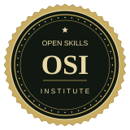

Build useful skills.
Explore training focused on the knowledge and communication practices you can bring to everyday professional life.
About Open Skills Institute
Your commitment to learning deserves recognition. Open Skills Institute helps you develop practical knowledge and present your professional development with a digital certificate.
Get certified in skills that support employment goals, strengthen everyday work, and open up your next step. Our focus spans communication, writing, design, and digital tools, with an accessible online self-paced format.
Free during our invitation-only beta.

Built around your development
Programs created by experts, flexible study, and a digital record of your professional development.
Explore training focused on the knowledge and communication practices you can bring to everyday professional life.
Create a personalized landscape PDF certificate with your name, training details, learning description, dates, and reference code.
Keep your certificate with your professional records or share it with an employer. Each employer decides whether it meets their requirements.
Help shape what comes next
OSI is free and currently in beta testing for invited participants. Feedback helps improve the experience, and optional donations can support ongoing development.
Open Skills Institute